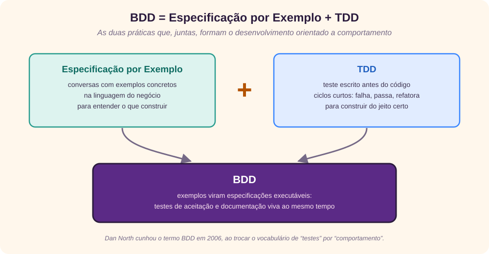
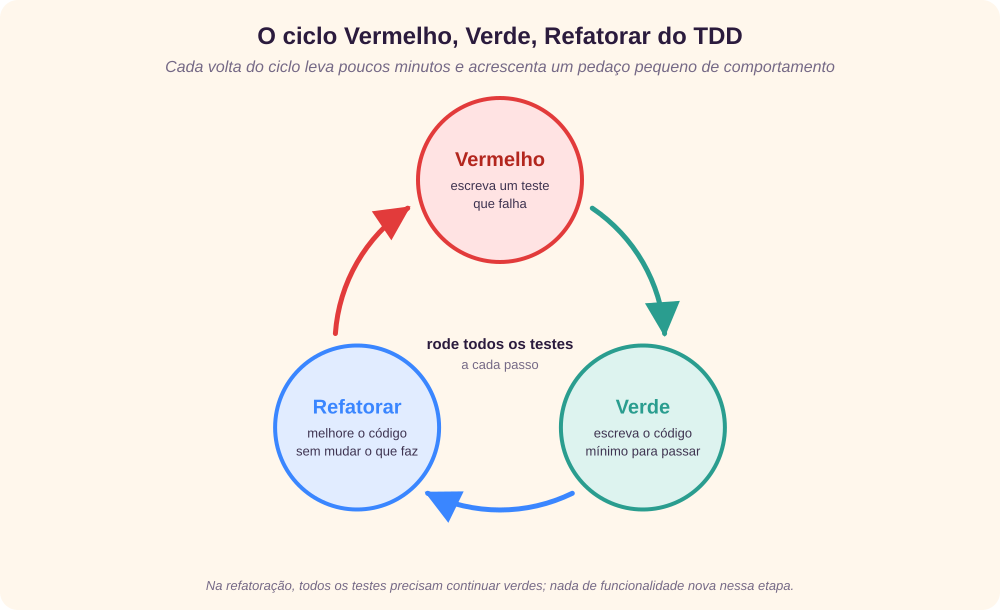
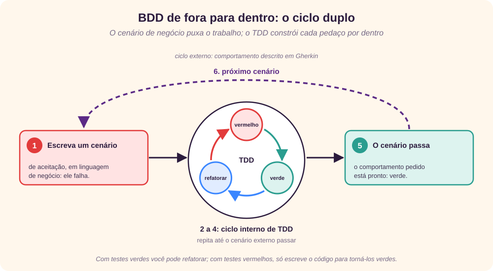
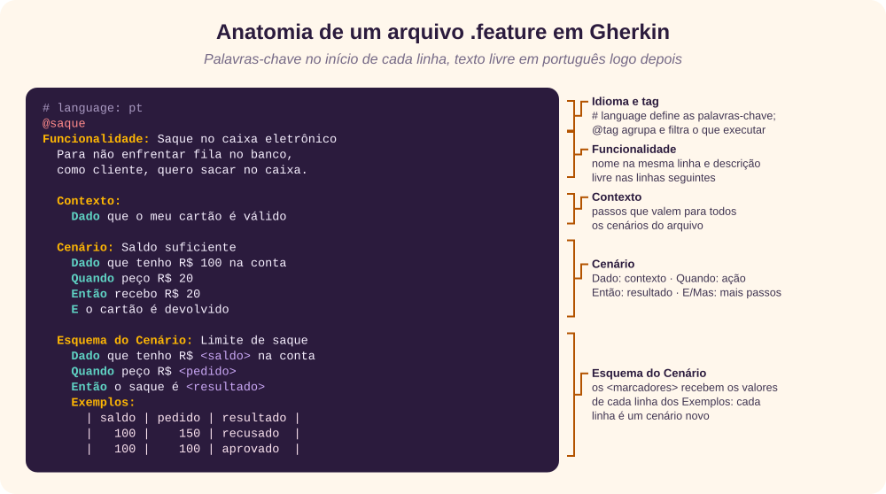
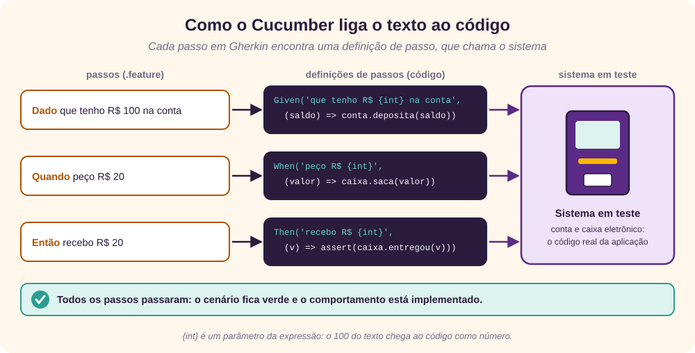

O que é BDD
O desenvolvimento orientado a comportamento (Behavior Driven Development, BDD) é um processo de desenvolvimento de software que nasceu do desenvolvimento orientado a testes (TDD). Ele usa exemplos para ilustrar o comportamento do sistema, escritos numa linguagem que todos os envolvidos entendem, do cliente ao desenvolvedor. [1] [2] [8]
Dan North, que deu nome e forma ao BDD, o resume assim:
BDD é usar exemplos em vários níveis para criar um entendimento comum e trazer à tona as incertezas, para entregar software que importa.
Dan North [2]
Esses exemplos têm dois destinos: viram especificações executáveis e servem como testes de aceitação. O BDD se concentra em:
- oferecer um processo e ferramentas comuns, que aproximam desenvolvedores, analistas de negócio e demais interessados, para entregar software com valor de negócio;
- descrever o que o sistema deve fazer, e não como deve ser implementado;
- dar mais legibilidade e visibilidade ao que está sendo construído;
- verificar não só se o software funciona, mas se atende ao que o cliente espera.
Este tutorial serve tanto para desenvolvedores quanto para analistas de negócio. Ele supõe que você já conhece os fundamentos de testes; se precisar revisá-los, veja o tutorial Testes de software.
Por que o BDD surgiu
O custo de corrigir um defeito se multiplica quando ele não é encontrado no momento certo. E muitos defeitos nascem antes do código: de requisitos mal entendidos. Se o requisito não for capturado corretamente, o erro atravessa projeto, código e testes, fica caro de corrigir e o produto final pode não atender ao cliente. [2]
Era preciso uma abordagem que partisse dos requisitos, mantivesse o foco neles durante todo o desenvolvimento e garantisse que fossem cumpridos. O BDD faz isso porque:
- deriva exemplos dos diferentes comportamentos esperados do sistema;
- escreve esses exemplos com os termos do domínio do negócio, para que todos entendam, inclusive o cliente;
- confirma os exemplos com o cliente de tempos em tempos, por meio de conversas;
- mantém o foco nos exemplos durante todo o desenvolvimento;
- usa os exemplos como testes de aceitação.
As duas práticas do BDD

- Especificação por Exemplo (SbE): usa exemplos nas conversas para ilustrar as regras de negócio e o comportamento do software. Assim, product owner, analistas, testadores e desenvolvedores eliminam os mal-entendidos mais comuns sobre os requisitos. [6]
- Desenvolvimento orientado a testes (TDD): no contexto do BDD, transforma os exemplos em especificações executáveis e legíveis. Os desenvolvedores as usam como guia para implementar cada pedaço de funcionalidade, o que gera um código enxuto e uma suíte de testes de regressão automatizados que mantém baixo o custo de manutenção. [4]
BDD e o Manifesto Ágil
No desenvolvimento ágil, o BDD é a forma de chegar a um entendimento comum sobre o que ainda falta especificar. O product owner descreve os comportamentos que espera; os desenvolvedores detalham as especificações e fazem perguntas; e o comportamento atual do sistema é considerado, para que a nova funcionalidade não quebre as existentes.
O Manifesto Ágil valoriza mais os itens da esquerda do que os da direita, e o BDD se alinha a cada um deles: [7]
| Manifesto Ágil | Como o BDD se alinha |
|---|---|
| Indivíduos e interações mais que processos e ferramentas | BDD é, antes de tudo, conversa. |
| Software em funcionamento mais que documentação abrangente | O foco é criar software com valor de negócio, e a documentação é o próprio teste executável. |
| Colaboração com o cliente mais que negociação de contratos | Os cenários nascem de ideias discutidas com o cliente durante todo o desenvolvimento, não de promessas. |
| Responder a mudanças mais que seguir um plano | A comunicação contínua facilita absorver mudanças. |
TDD, a base do BDD
Para entender por que se diz que “o BDD vem do TDD”, é preciso entender o TDD.
O problema do teste no final
Na abordagem tradicional, o teste vem depois de cada etapa (test-last). Na prática, ele acaba sendo espremido ou pulado por atrasos, prazos apertados e pressão para entregar. O teste unitário, que caberia ao desenvolvedor, costuma ser o primeiro a cair, com justificativas como “sou desenvolvedor, não testador” ou “meu código não tem defeitos”. O resultado é qualidade comprometida, responsabilidade concentrada nos testadores, correções caras depois da entrega e clientes insatisfeitos.
Teste primeiro
A abordagem test-first inverte a ordem: em vez de escrever o código e depois testar (de dentro para fora), escreve-se o teste e depois o código (de fora para dentro). Ela aparece na Programação Extrema (XP) e no TDD, formalizado por Kent Beck: o desenvolvedor escreve o teste unitário de um módulo antes de escrever uma única linha dele, e então escreve o código com o objetivo de fazer o teste passar. [4] [5]
O ciclo Vermelho, Verde, Refatorar

- escolha o pedaço de código a escrever;
- escreva um teste para ele;
- rode o teste: ele falha, porque o código ainda não existe (vermelho);
- escreva o mínimo de código para o teste passar (verde);
- rode todos os testes para garantir que continuam passando;
- refatore: remova duplicações e melhore o código;
- repita para o próximo pedaço.
Cada volta deve ser curta; uma hora de trabalho costuma ter muitos ciclos.
Vantagens do TDD
- o desenvolvedor precisa entender o resultado esperado, e como testá-lo, antes de codificar;
- um componente só está pronto quando o teste passa e o código foi refatorado;
- como a suíte roda a cada refatoração, o retorno sobre o que ainda funciona é constante;
- os testes unitários servem de documentação sempre atualizada;
- cada defeito encontrado ganha um teste que o reproduz, o que reduz o tempo de depuração e impede que ele volte;
- o desenvolvedor pode mudar o projeto e refatorar com segurança, o que torna o software mais fácil de manter;
- como boa parte do teste acontece durante o desenvolvimento, o teste antes da entrega fica mais curto.
Onde o TDD deixa dúvidas
O ponto de partida são as histórias de usuário, que descrevem comportamento. Com o TDD puro, o desenvolvedor fica com perguntas: quando testar? O que testar? Como saber se uma especificação foi atendida? O código entrega valor de negócio? É aqui que o BDD entra.
Mitos sobre o TDD
| Mito | Esclarecimento |
|---|---|
| TDD é só teste e automação de testes. | TDD é uma forma de desenvolver, usando a abordagem de teste primeiro. |
| TDD não tem projeto. | Tem análise e projeto baseados nos requisitos; o projeto emerge durante o desenvolvimento. |
| TDD é só para testes unitários. | Pode ser usado também nos níveis de integração e de sistema. |
| TDD só serve para projetos ágeis. | Ficou popular com a XP, mas pode ser usado em projetos tradicionais. |
| TDD é uma ferramenta. | É uma metodologia. As ferramentas de automação apenas facilitam rodar toda a suíte a cada mudança. |
| TDD significa entregar os testes de aceitação aos desenvolvedores. | Não significa. |
ATDD: aceitação primeiro
O desenvolvimento orientado a testes de aceitação (ATDD) define os critérios e os testes de aceitação quando as histórias de usuário são criadas, no início do desenvolvimento. O foco é a comunicação e o entendimento comum entre clientes, desenvolvedores e testadores. [9]
As práticas centrais são:
- discutir cenários do mundo real para construir um entendimento comum do domínio;
- usar esses cenários para chegar aos critérios de aceitação;
- automatizar os testes de aceitação;
- concentrar o desenvolvimento em fazer esses testes passarem;
- usar os testes como especificação viva, que facilita as mudanças.
Com isso, os requisitos ficam sem ambiguidade e sem lacunas funcionais, todos passam a enxergar os casos especiais que os desenvolvedores previram, e os testes de aceitação guiam o desenvolvimento.
De TDD para BDD
Dan North percebeu que programadores que praticavam TDD esbarravam sempre nas mesmas dúvidas: por onde começar, o que testar e o que não testar, quanto testar de uma vez, que nome dar aos testes e como entender por que um teste falhou. A resposta dele foi mudar o vocabulário: pensar em comportamento, e não em testes. [3]
Achei a mudança de pensar em testes para pensar em comportamento tão profunda que comecei a chamar o TDD de BDD, ou desenvolvimento orientado a comportamento.
Dan North, “Introducing BDD”, 2006 [3]
O TDD se preocupa com como algo vai funcionar; o BDD, com por que estamos construindo aquilo. As respostas do BDD às dúvidas do TDD são:
| Pergunta | Resposta do BDD |
|---|---|
| Por onde começar? | De fora para dentro |
| O que testar? | As histórias de usuário |
| O que não testar? | Todo o resto |
| Quanto testar de uma vez? | Muito pouco, com foco |
| Que nome dar aos testes? | Uma frase, seguindo um modelo |
| Como entender por que um teste falhou? | Pela documentação que o próprio teste é |
O modelo de história
Como [papel]
Eu quero [funcionalidade]
Para que [benefício]Ou seja: quando a funcionalidade é executada, quem ganha o benefício é a pessoa no papel.
O modelo de exemplo
Dado um contexto inicial,
Quando um evento acontece,
Então garanta alguns resultados.Partindo de um contexto, quando um evento acontece, sabemos quais resultados devem ocorrer. Martin Fowler descreve esse formato como uma forma de representar testes a partir da especificação por exemplo. [16]
Exemplo: o caixa eletrônico de Dan North
História: O cliente saca dinheiro
Como cliente,
Eu quero sacar dinheiro no caixa eletrônico,
Para que eu não precise enfrentar fila no banco.
Cenário 1: A conta tem saldo
Dado que a conta tem saldo
E o cartão é válido
E o caixa tem dinheiro
Quando o cliente pede dinheiro
Então a conta é debitada
E o dinheiro é entregue
E o cartão é devolvido
Cenário 2: A conta passou do limite do cheque especial
Dado que a conta está negativa além do limite
E o cartão é válido
Quando o cliente pede dinheiro
Então uma mensagem de recusa é exibida
E o dinheiro não é entregue
E o cartão é devolvidoO evento é o mesmo nos dois cenários, mas o contexto muda, e por isso os resultados são diferentes. [3]
TDD × BDD
- O TDD descreve como o software funciona.
- O BDD descreve como o usuário usa o software, promove colaboração e comunicação, dá ênfase a exemplos de comportamento e busca especificações executáveis derivadas desses exemplos.
O ciclo de fora para dentro
O ciclo de desenvolvimento do BDD começa pelo lado de fora, no comportamento que o usuário vê, e desce até as unidades de código. Steve Freeman e Nat Pryce chamam isso de ciclo duplo: um ciclo externo de aceitação envolve vários ciclos internos de TDD. [17]

- escreva um exemplo de alto nível, de valor para o negócio (com Cucumber, por exemplo), que fica vermelho;
- escreva um exemplo de baixo nível, de unidade, para o primeiro passo da implementação, que também fica vermelho;
- implemente o mínimo de código para esse exemplo passar: verde;
- escreva o próximo exemplo de baixo nível que aproxima o passo 1 de passar;
- repita os passos 3 e 4 até o exemplo de alto nível ficar verde.
O estado vermelho ou verde funciona como uma permissão:
- com os testes de baixo nível verdes, você pode escrever novos exemplos ou refatorar, mas sem acrescentar funcionalidade durante a refatoração;
- com os testes vermelhos, você só pode mexer no código para fazê-los passar. Resista à vontade de adiantar o próximo teste, que ainda não existe, ou de criar funções que o cliente não pediu.
Especificação por Exemplo
Gojko Adzic, autor de Specification by Example, a define como um conjunto de padrões de processo que facilitam mudanças em produtos de software, para garantir que o produto certo seja entregue com eficiência. Em vez de declarações abstratas, os requisitos e os testes funcionais são capturados com exemplos realistas, definidos em colaboração. [6]
Ela se apoia numa linguagem ubíqua, conceito de Eric Evans: um vocabulário preciso e compartilhado, criado por uma equipe multidisciplinar e usado por todos, nos requisitos, no código e nos testes. [12] Os exemplos servem de entrada direta para testes automatizados que refletem o domínio do negócio, e por isso a SbE cuida ao mesmo tempo de construir o produto certo e de construí-lo do jeito certo.
Por que exemplos
Exemplos são mais fáceis de entender e mais difíceis de interpretar errado. Viram requisitos executáveis, que podem ser testados sem tradução e ficam registrados numa documentação viva. O foco passa a ser prevenir defeitos, e não apenas detectá-los.
Vantagens: mais qualidade, menos desperdício, menos risco de defeitos em produção, esforço mais focado, mudanças mais seguras e maior envolvimento do negócio.
Quando usar: funciona bem em negócios ou organizações complexas, inclusive em sistemas legados. Funciona mal em problemas puramente técnicos e em produtos centrados na interface gráfica.
Exemplos como testes de aceitação
- uma mesma ilustração serve de requisito detalhado e de teste;
- o progresso do projeto é medido em comportamentos: cada teste verifica um comportamento, e um teste que passa significa que aquele comportamento está pronto. Se o projeto precisa de 100 comportamentos e 60 passam, ele está 60% concluído;
- os testadores deixam de só achar defeitos e passam a preveni-los, participando do desenho da solução;
- a automação mostra na hora o impacto de uma mudança de requisito.
| Papel | O que ganha com a SbE |
|---|---|
| Analista de negócio | Requisitos sem ambiguidade e sem lacunas; os desenvolvedores de fato leem as especificações. |
| Desenvolvedor | Entende melhor o que está construindo; o progresso é medido pelas especificações que passam. |
| Testador | Entende melhor o que testa, participa desde o início e trabalha na prevenção de defeitos. |
| Todos | Economia de tempo ao achar erros cedo e um produto de qualidade desde o começo. |
Os seis padrões de processo
1. Especificar em colaboração: os Três Amigos
O objetivo é que os diferentes papéis tenham um entendimento e um vocabulário comuns, que todos contribuam com a sua perspectiva e que a responsabilidade pelas funcionalidades seja compartilhada. Isso acontece numa oficina de especificação conhecida como reunião dos Três Amigos: negócio (analista ou PO), desenvolvimento e teste. [10]
Na reunião, o negócio apresenta os requisitos e os testes da nova funcionalidade; os três discutem e revisam as especificações; desenvolvimento e teste apontam o que falta. Todos usam a linguagem do domínio (mantendo um glossário, se preciso), procuram diferenças e conflitos, evitam detalhes de implementação e chegam a um consenso sobre se a funcionalidade está suficientemente especificada. O mapeamento de exemplos ajuda a dar forma à conversa, com cartões para a história, as regras, os exemplos e as perguntas em aberto. [11]
2. Ilustrar com exemplos
Dado <uma pré-condição>
E <outras pré-condições> # opcional
Quando <uma ação ou gatilho ocorre>
Então <uma pós-condição>
E <outras pós-condições> # opcionalCada exemplo descreve um comportamento do sistema e é também um critério de aceitação. A equipe discute os exemplos até concordar que cobrem o comportamento esperado.
3. Refinar a especificação
- seja preciso; se um exemplo ficar complexo, divida-o;
- use a perspectiva do negócio e evite detalhes técnicos;
- considere condições positivas e negativas, valores-limite e casos extremos;
- mantenha o vocabulário do domínio;
- discuta os exemplos com o cliente e fique só com os que interessam a ele, sem tentar cobrir todas as combinações;
- especifique regras de negócio adicionais, como cálculos complexos e transformações de dados;
- inclua cenários não funcionais, como desempenho e usabilidade, quando fizer sentido.
4. Automatizar os exemplos
A camada de automação deve ser bem fina: apenas ligar a especificação ao sistema em teste. Foque na especificação, e não no script; mostre com clareza a relação entre entradas e saídas.
5. Validar com frequência
Inclua a validação dos exemplos no pipeline, a cada mudança. Os princípios são testar cedo, testar bem e testar sempre. Um comportamento só está pronto quando o teste correspondente passa.
6. Documentação viva
Mantenha as especificações curtas e simples, organize-as, evolua-as com o trabalho e deixe-as acessíveis a todo o time. Como elas rodam como testes, nunca ficam desatualizadas sem que alguém perceba.
Antipadrões
Antipadrões são práticas recorrentes que parecem razoáveis, mas causam problemas. Na Especificação por Exemplo, os mais comuns são: [6]
| Antipadrão | Problemas |
|---|---|
| Falta de colaboração | Muitas suposições; construir e testar a coisa errada; não saber quando o código está pronto. |
| Exemplos detalhados demais ou centrados na interface | Testes difíceis de manter; especificações difíceis de entender; o negócio perde o interesse. |
| Subestimar o esforço | O time acha que falhou e se desanima cedo. |
Para evitá-los, reúna-se para especificar com exemplos, limpe e melhore os exemplos, escreva o código que os satisfaz, automatize-os e repita a cada história. Na prática, isso significa:
- Colaborar: negócio, desenvolvimento e teste contribuem com as suas perspectivas; o processo vale mais do que os próprios testes.
- Focar no “o quê”: não tente cobrir todos os casos, mantenha os exemplos simples e compreensíveis para os usuários e deixe as ferramentas fora das oficinas.
- Focar no negócio: escreva as especificações no nível da intenção de negócio, envolva o negócio na criação e na revisão e esconda os detalhes na camada de automação.
- Estar preparado: os benefícios não aparecem de imediato, a adoção é desafiadora e exige tempo e investimento, e a automação tem custo.
Gherkin
Gherkin é a linguagem usada para escrever funcionalidades, cenários e passos. O objetivo é escrever requisitos concretos. Compare: [13]
- “Clientes devem ser impedidos de informar dados de cartão inválidos.”
- “Se o cliente informar um número de cartão que não tem exatamente 16 dígitos, ao enviar o formulário ele deve ser exibido de novo, com uma mensagem informando o número correto de dígitos.”
A segunda frase não tem ambiguidade, evita erros e pode ser testada. O Gherkin tem versões em dezenas de idiomas, inclusive o português; basta indicar o idioma na primeira linha. [14]

Palavras-chave
Arquivos Gherkin são texto simples com extensão .feature. Toda linha não vazia começa com uma palavra-chave:
| Português | Inglês | Para que serve |
|---|---|---|
Funcionalidade | Feature | Descreve uma funcionalidade e agrupa os seus cenários. |
Regra | Rule | Agrupa os cenários de uma mesma regra de negócio (desde o Gherkin 6). |
Contexto | Background | Passos executados antes de cada cenário do arquivo. |
Cenário ou Exemplo | Scenario ou Example | Um exemplo concreto de comportamento. |
Dado, Quando, Então, E, Mas | Given, When, Then, And, But | Os passos: contexto, ação, resultado e continuações. |
Esquema do Cenário | Scenario Outline | Um modelo de cenário com marcadores <assim>. |
Exemplos | Examples | A tabela que preenche os marcadores; cada linha gera um cenário. |
""" · | · @ · # | Texto de várias linhas, tabelas de dados, tags e comentários. | |
Funcionalidade
Tem a palavra-chave, um nome na mesma linha e uma descrição opcional (mas recomendada) nas linhas seguintes. Por convenção, o arquivo leva o nome da funcionalidade em minúsculas, com sublinhados: saque_no_caixa_eletronico.feature. Para identificar funcionalidades, pode-se usar o modelo de injeção de funcionalidade: Para <atingir um objetivo>, como <tipo de usuário>, eu quero <uma funcionalidade>.
Cenário
Uma funcionalidade costuma ter de 5 a 20 cenários. Cada um descreve um contexto (Dado), uma ação (Quando) e um resultado esperado (Então); E e Mas acrescentam passos do mesmo tipo:
Cenário: Tentativa de saque com cartão roubado
Dado que tenho R$ 100 na conta
Mas o meu cartão é inválido
Quando peço R$ 50
Então o cartão não deve ser devolvido
E devo ser orientado a procurar o bancoCada cenário deve fazer sentido e rodar sozinho, sem depender de outro ter rodado antes. Isso torna os testes mais simples, permite rodar só uma parte deles e, dependendo do sistema, rodá-los em paralelo.
Esquema do cenário
Quando vários cenários só mudam os valores, use um esquema: os marcadores ficam entre < e > e os valores vêm na tabela de exemplos, em que cada linha vira um cenário.
# language: pt
Funcionalidade: Somar
Esquema do Cenário: Somar dois números
Dado a entrada "<entrada>"
Quando a calculadora é executada
Então a saída deve ser "<saida>"
Exemplos:
| entrada | saida |
| 2+2 | 4 |
| 98+1 | 99 |
| 255+390 | 645 |Cucumber e as definições de passos
O Cucumber é uma ferramenta livre de linha de comando que lê arquivos .feature e executa os cenários contra o sistema. Ele junta, num só lugar, a especificação executável, o teste automatizado e a documentação viva. [15]
Um teste de aceitação típico em Cucumber mostra a hierarquia: testes de aceitação se referem a funcionalidades, as funcionalidades são explicadas por cenários e os cenários são feitos de passos.
# language: pt
Funcionalidade: Cadastro
O cadastro deve ser rápido e simpático.
Cenário: Cadastro bem-sucedido
Novos usuários devem receber um e-mail de confirmação
e ser cumprimentados pelo nome.
Dado que escolhi me cadastrar
Quando me cadastro com dados válidos
Então devo receber um e-mail de confirmação
E devo ver uma mensagem de boas-vindas personalizadaComo funciona

- cada passo em Gherkin precisa de uma definição de passo: um trecho de código com uma expressão associada;
- ao executar um passo, o Cucumber procura a definição cuja expressão casa com o texto e roda o código dela. A palavra-chave (Dado, Quando, Então) não entra na comparação;
- parâmetros como
{int}ou{string}capturam valores do texto e os passam para o código; - se todos os passos rodam sem erro, o cenário passa; ao final, o Cucumber informa quantos cenários passaram e o que falhou.
O Cucumber tem implementações para várias plataformas, como Java (Cucumber-JVM), JavaScript (Cucumber.js) e Ruby, e se integra a ferramentas como Selenium e Spring.
Ferramentas
Um equívoco comum é achar que BDD é uma ferramenta. BDD é uma abordagem de desenvolvimento; as ferramentas apenas ajudam. Há até equipes que praticam Especificação por Exemplo sem ferramenta nenhuma. As mais conhecidas:
| Plataforma | Ferramentas |
|---|---|
| Várias | Cucumber (Ruby, Java, JavaScript e outras) [15] |
| .NET | Reqnroll, sucessor do SpecFlow [18] |
| Python | Behave [19], Lettuce |
| Java | JBehave, Concordion [20] |
| PHP | Behat [20], Kahlan |
| JavaScript | Cucumber.js, Jasmine, Yadda |
| Groovy | Spock |
| Interface gráfica | Squish GUI Tester |
SpecFlow e Reqnroll
O SpecFlow foi por anos a ferramenta de BDD do .NET: usava Gherkin, gerava uma classe de teste por funcionalidade e um método por cenário, transformava tags em categorias de teste e esquemas de cenário em testes por linha. A Tricentis aposentou o SpecFlow, e o Reqnroll nasceu como uma retomada de código aberto do projeto, compatível com ele e com migração simples. [18]
Behave
No Behave, para Python, os arquivos ficam numa pasta features: os arquivos .feature com os cenários, uma pasta steps com as definições de passos em Python e, opcionalmente, um arquivo de ambiente com código para rodar antes e depois de passos, cenários ou funcionalidades. [19]
Concordion
O Concordion, para Java, automatiza a Especificação por Exemplo com especificações escritas em linguagem natural, com parágrafos e tabelas, sem exigir o formato Dado/Quando/Então. [20]
Revisão rápida
Tente responder antes de abrir cada pergunta.
1. Quais são as duas práticas que formam o BDD?
A Especificação por Exemplo, que define o que construir com exemplos concretos, e o TDD, que constrói o código guiado por testes escritos antes.
2. O que acontece em cada etapa do ciclo Vermelho, Verde, Refatorar?
Vermelho: escreve-se um teste que falha. Verde: escreve-se o mínimo de código para passar. Refatorar: melhora-se o código sem mudar o comportamento, com todos os testes verdes.
3. Qual a principal diferença entre TDD e BDD?
O TDD descreve como o software funciona; o BDD descreve como o usuário usa o software e por que ele está sendo construído, com um vocabulário de comportamento que todos entendem.
4. Quem são os Três Amigos?
Negócio (analista ou product owner), desenvolvimento e teste, que se reúnem para especificar juntos a funcionalidade antes de codificar.
5. Qual é o modelo de uma história e o de um exemplo?
História: Como [papel], eu quero [funcionalidade], para que [benefício]. Exemplo: Dado [contexto], Quando [evento], Então [resultado].
6. Quando usar um Esquema do Cenário?
Quando vários cenários só diferem nos valores. Os marcadores entre < e > são preenchidos pela tabela de Exemplos, e cada linha gera um cenário.
7. Como o Cucumber sabe qual código rodar para um passo?
Procurando a definição de passo cuja expressão casa com o texto do passo. Parâmetros como {int} passam os valores do texto para o código.
8. BDD é uma ferramenta?
Não. É uma abordagem de desenvolvimento. Cucumber, Reqnroll, Behave e outras apenas ajudam a automatizar as especificações.
Referências
- Giovani Perotto Mesquita, “Behavior Driven Development Tutorial”, GitHub Gist, texto original deste tutorial, gist.github.com/GiovaniPM/d115d35e2d4c0fe4062f8b6f98c84d82.
- Tutorialspoint, “Behavior Driven Development Tutorial”, acesso em 25/09/2026, tutorialspoint.com/behavior_driven_development.
- Dan North, “Introducing BDD”, 2006, dannorth.net/introducing-bdd.
- Kent Beck, Test-Driven Development: By Example, Addison-Wesley, 2002.
- Martin Fowler, “Test Driven Development”, martinfowler.com/bliki/TestDrivenDevelopment.html.
- Gojko Adzic, Specification by Example, Manning, 2011, gojko.net/books/specification-by-example.
- Manifesto para o Desenvolvimento Ágil de Software, 2001, agilemanifesto.org/iso/ptbr/manifesto.html.
- Agile Alliance, “Behavior Driven Development (BDD)”, glossário, agilealliance.org/glossary/bdd.
- Agile Alliance, “Acceptance Test Driven Development (ATDD)”, glossário, agilealliance.org/glossary/atdd.
- Agile Alliance, “Three Amigos”, glossário, agilealliance.org/glossary/three-amigos.
- Matt Wynne, “Introducing Example Mapping”, blog do Cucumber, cucumber.io/blog/bdd/example-mapping-introduction.
- Eric Evans, Domain-Driven Design: Tackling Complexity in the Heart of Software, Addison-Wesley, 2003.
- Cucumber, “Gherkin Reference”, acesso em 25/09/2026, cucumber.io/docs/gherkin/reference.
- Cucumber, “Localisation” (idiomas do Gherkin), acesso em 25/09/2026, cucumber.io/docs/gherkin/languages.
- Cucumber, “Step Definitions”, acesso em 25/09/2026, cucumber.io/docs/cucumber/step-definitions.
- Martin Fowler, “GivenWhenThen”, martinfowler.com/bliki/GivenWhenThen.html.
- Steve Freeman e Nat Pryce, Growing Object-Oriented Software, Guided by Tests, Addison-Wesley, 2009.
- Reqnroll, site oficial, acesso em 25/09/2026, reqnroll.net.
- Behave, documentação, acesso em 25/09/2026, behave.readthedocs.io.
- Outras ferramentas: Concordion, concordion.org; JBehave, jbehave.org; Behat, docs.behat.org.